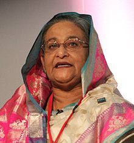

Sheikh Hasina

From Wikipedia, the free encyclopedia
Sheikh Hasina Wazed ( Bengali : শেখ হাসিনা ওয়াজেদ; English: /ˈʃeɪk həˈsiːnə/, SHAYK hə-SEE-nə; born 28 September 1947) is the current and 10th Prime Minister of Bangladesh, in office since January 2009.
Hasina is the daughter of Bangladesh's first President Sheikh Mujibur Rahman . Her political career has spanned more than four decades. She previously served as opposition leader from 1986 to 1990 and from 1991 to 1995, as Prime Minister from 1996 to 2001, and has been leading the Bangladesh Awami League since 1981. [1][2][3][4] In 2008, she returned as Prime Minister with a landslide victory. In January 2014, she became Prime Minister for a third term in an unopposed election, violating the key rules of the Constitution.
Hasina is one of the most powerful women in the world, ranking 30th on Forbes' list of The World's 100 Most Powerful Women in 2017.[5] Hasina is a member of the Council of Women World Leaders , an International network of current and former women presidents and prime ministers.[6] .In 2017 Hasina has been featured distinctively in a book named Women Presidents and Prime Ministers as one of the 18 current women national leaders of the world.[7]
Two of the most outstanding achievements of Sheikh Hasina are her leadership-roles and success behind the trials of Bangabandhu killers and the persons who committed crimes against humanity in 1971.
Hasina's second term (2009 to 2014) as Prime Minister is overshadowed by quite a few scandalous incidents. These include: Padma Bridge Scandal, Hallmark-Sonali Bank Scam, Share market Scandal, Rana Plaza collapse , and Bangladesh road safety protests 2018.
For the better part of the last two decades, Hasina's chief rival has been BNP leader Khaleda Zia, and their rivalry is popularly known as the "Battle of Begums".[8][9][10] The two women have alternated as non-interim Prime
Contents[ hide ]
- Early life
- Early political career
-
First term as Prime Minister, 1996–2001
- 3.1 2001 election
- Opposition period, 2001–2008
-
Second term as Prime Minister, 2009–2014
- 5.1 Scandals
- 5.2 2014 election
- Third term as Prime Minister, 2014–present
-
Controversies
- 7.1 Padma Bridge graft scandal
- 7.2 Muhammad Yunus
- 7.3 Khaleda Zia
- 7.4 Criminal charges
- Personal life
-
Work
- 9.1 Book
- Honours
- Hasina: A Daughter's Tale
- See also
- References
- Further reading
- External links
Sheikh Hasina Wazed
শেখ হাসিনা ওয়াজেদ
10th Prime Minister of Bangladesh
Assumed office
6 January 2009
President: Zillur Rahman (2009–13)
Abdul Hamid (2013–)
Preceded by:Fakhruddin Ahmed (Acting)
In office
23 June 1996 – 15 July 2001
President: Abdur Rahman Biswas
Shahabuddin Ahmed
Preceded by:Muhammad Habibur Rahman (Acting)
Succeeded by: Latifur Rahman (Acting)
Preceded by:Khaleda Zia
Succeeded by: Khaleda Zia
In office
20 March 1991 – 30 March 1996
Preceded by:Abdur Rab
Succeeded by: Khaleda Zia
In office
7 May 1986 – 3 March 1988
Preceded by:MAsaduzzaman Khan (1982)
Succeeded by: Abdur Rab (Acting)
Preseded by:Abdul Malek Ukil
Personal Life
President: 28 September 1947 (age 71)
Tungipara, Gopalganj District
Political party: Awami League (1980-Present)
Other political affiliations: Grand Alliance (2008–present)
Spouse(s): Wazed Miah (m. 1968; d. 2009)